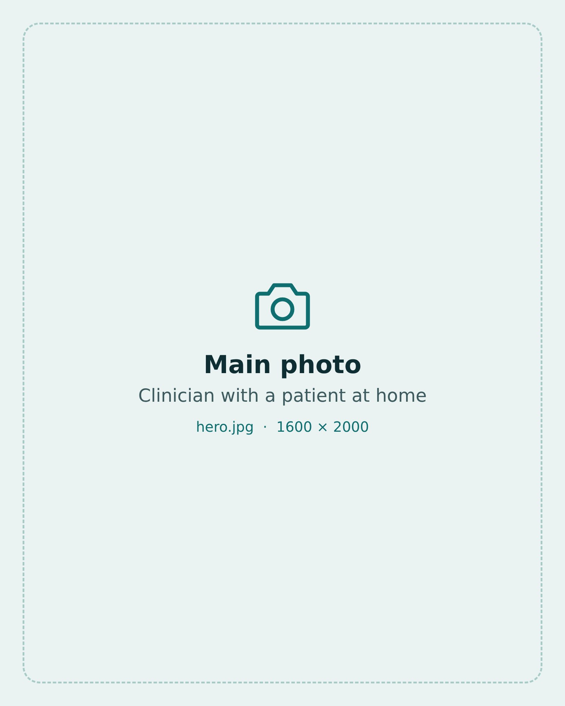
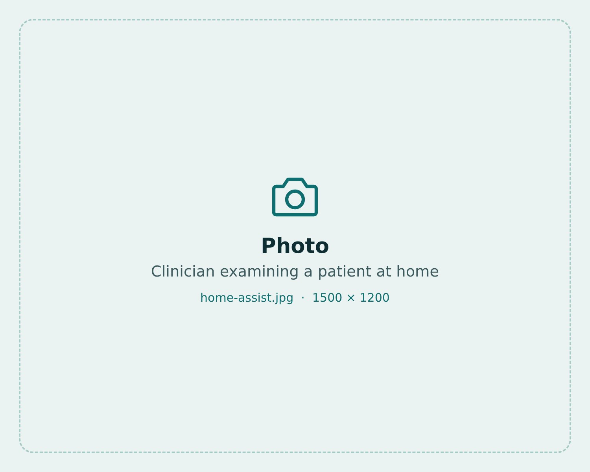

Mobile service
Care where you are.
Clinical care delivered in the patient’s residence or care setting, removing travel and its burden.
Expert assessment, measured interventions, and straightforward follow-ups delivered in the setting that suits you best — at home, in clinic, or in long-term care.

Rapid triage, clear options, and an immediate, practical plan — same-day phone or video intake, followed by a scheduled in-person or home visit.
Every patient follows the same clear pathway, so you always know what happens next.
Wound mapping, risks identified.
Measurable goals, chosen interventions.
Dressings, debridement, advanced options as indicated.
Follow-ups, telehealth checks, carer education.

We care for patients whose wounds:
What makes Wello different.
Care where you are.
Clinical care delivered in the patient’s residence or care setting, removing travel and its burden.
Medicare, Medi-Cal, and more.
We accept these programs and many common plans; coverage can be confirmed before care begins.
We handle coding and reimbursement.
We help to reduce administrative burden around invoices and codes. Practical, straightforward help so you can focus on care.
Focused on dignity, comfort, and healing.
Decisions are guided by comfort, clear communication, and the patient’s goals.
Personal attention, proven methods.
Personal attention paired with established clinical approaches, aiming for meaningful improvement.
Wello uses placental biologic grafts — ethically sourced from planned C-sections and rich in healing growth factors.

Booking, preparing for a visit, and what to expect at the first appointment.
All FAQs and resourcesWe take a focused clinical history, map the wound, assess infection and risk factors, set measurable goals, and agree a practical plan. Expect clear explanations, modest pain control where needed, and a timeline for review.
Click the Book an appointment button, call us at (833) 730-4498, or fill out the contact form. We’ll ask a few quick questions and then arrange the best type of visit for you — either at home, in our clinic, or online.
Bring a list of current medications, recent wound notes or photos if available, and a means of contact for family or carers. For home visits, ensure a clean area for the clinician to work.
Same-day phone or video intake, followed by a scheduled visit at home, in clinic, or in your care facility.